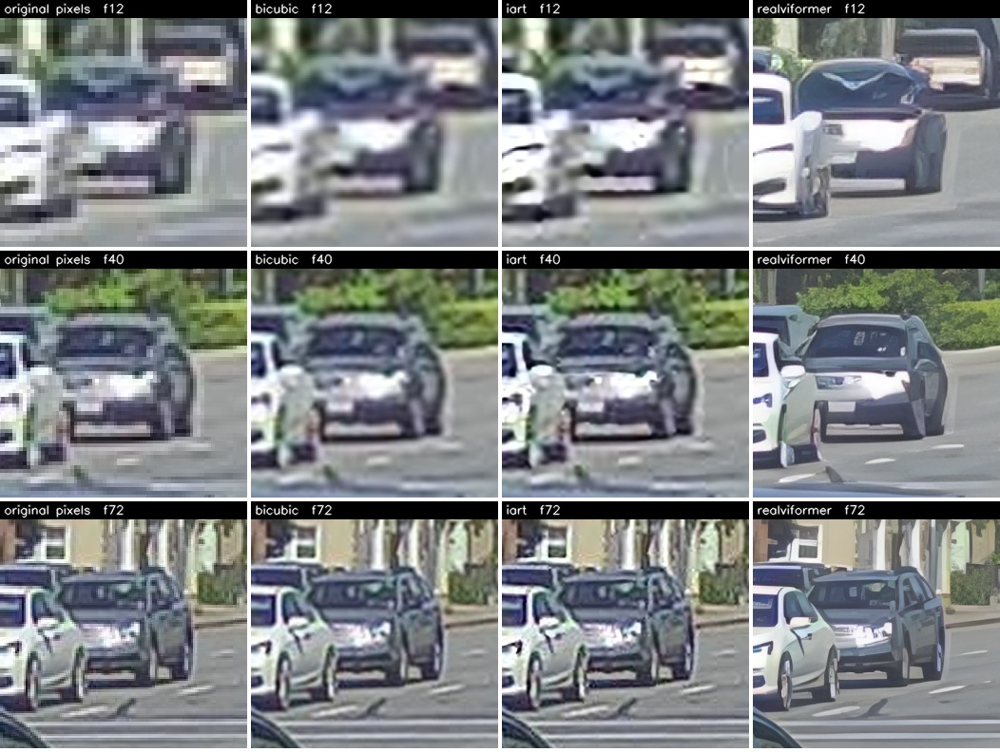
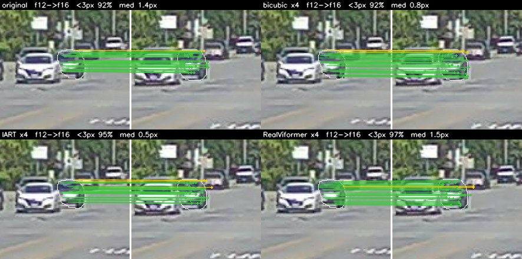
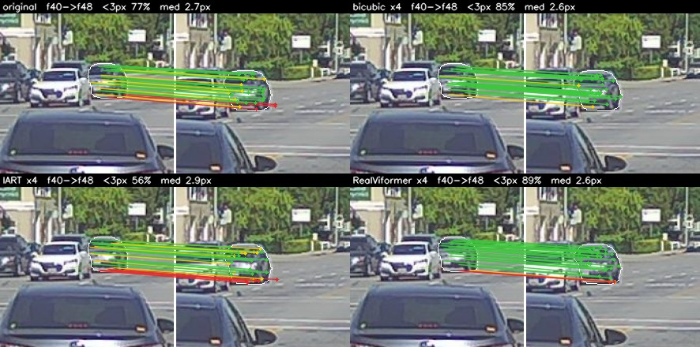
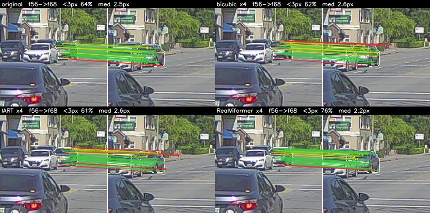

Setup
A fixed 192×192 px window follows the vehicle in every frame where it is visible; it is upsampled x4 to 768×768 by each method; RoMa v2 (800 px, one direction, no high-res refinement) matches pairs of test frames 4, 8 and 12 frames apart (48 pairs). Matches are scored against the correspondence given by the GT 3D box (pixel ray hits the box in frame A, the point moves with the box to frame B). Clouds and trajectories use the same back-end for every input: DA3 depth of the test frames rescaled per frame to a smoothed distance (DA3 + ground contact), vehicle limited to ±2.5 m in depth, 4-DoF RANSAC per pair, joint pose graph.
Run time (75 frames, A100)
| Method | Total | Per frame | Peak GPU memory |
|---|---|---|---|
| Bicubic x4 | 0.06 s | 0.8 ms | – |
| IART x4 | 80 s | 1.07 s | 8.5 GB |
| RealViformer x4 | 2.2 s | 30 ms | 2.5 GB |

Test frames 12 / 40 / 72: original pixels | bicubic | IART | RealViformer.
Matches before vs after super-resolution
| RoMa v2 input | Gap 4: <3 px / median px | Gap 8 | Gap 12 | All 48 pairs |
|---|---|---|---|---|
| Original crops | 90% / 1.2 | 77% / 1.4 | 60% / 2.3 | 76% / 1.5 |
| Bicubic x4 | 90% / 1.2 | 77% / 1.4 | 60% / 2.2 | 76% / 1.5 |
| IART x4 | 89% / 1.2 | 66% / 2.2 | 51% / 2.9 | 69% / 1.8 |
| RealViformer x4 | 96% / 1.1 | 91% / 1.0 | 85% / 1.4 | 91% / 1.2 |
Green: within 3 px of the GT-box correspondence, yellow: within 8 px, red: worse. Each panel: frame A | frame B (original images), 30 sampled matches.



Point clouds and trajectories
| Matches from | Frames registered | Points inside GT box | Cloud extent l × w × h (m), GT 4.45 × 1.85 × 1.69 | Position error vs GT median / max (m) |
|---|---|---|---|---|
| Original crops | 18/18 | 60% | 6.15 × 1.28 × 1.28 | 4.93 / 15.98 |
| Bicubic x4 | 18/18 | 53% | 12.29 × 6.36 × 1.28 | 3.62 / 33.04 |
| IART x4 | 18/18 | 52% | 10.25 × 3.1 × 1.27 | 4.43 / 104.66 |
| RealViformer x4 | 18/18 | 53% | 5.74 × 1.52 × 1.28 | 5.75 / 16.02 |